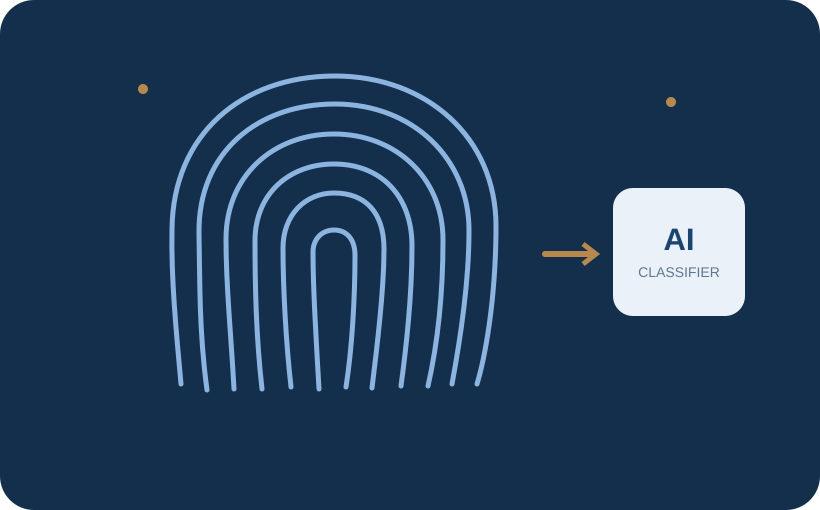

Languages & programming
Build application logic, work with data and explore different programming paradigms.
PythonJavaJavaScriptGo
Artificial intelligence / Data science / Engineering
I study AI and Data Science at Gyalpozhing College of Information Technology, exploring practical intelligent systems and full-stack software—from the first idea to a working prototype.
01 / About
I'm Novin Rai, a fourth-year AI and Data Science student at Gyalpozhing College of Information Technology (GCIT), Gyelpozhing, Bhutan.
My interests cover artificial intelligence, data analysis, and both frontend and backend development. I enjoy projects that connect technical ideas with real contexts—such as Bhutanese language, cultural dance and environmental challenges.
See how I approach projects ↗02 / Capabilities
Languages, engineering interests and problem-solving areas I'm building with.
Build application logic, work with data and explore different programming paradigms.
Build interfaces and services across the full-stack development workflow.
Explore applied machine learning, data-driven analysis and intelligent systems.
03 / Selected work

Exploring an AI model that uses fingerprint patterns to predict a blood-group category.

An AI-oriented learning experience centered on Bhutanese cultural dance.

Using AI to identify possible forest-cover changes from image data.

A parallel comparison of language-model answers to Dzongkha and English multiple-choice questions.
04 / Design process
Explore the low-fidelity wireframes and high-fidelity design boards for this portfolio. The editable SVG designs are packaged for Figma import.
05 / Contact
I'm interested in learning, collaboration, and projects at the intersection of applied AI, data and software engineering.
Verified contact channels can be added in js/site-config.js. No email address has been invented.